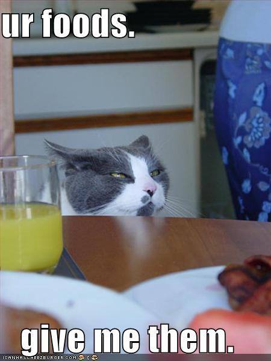
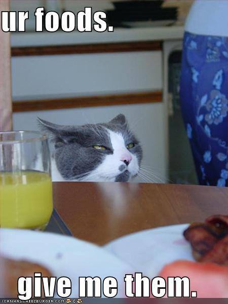
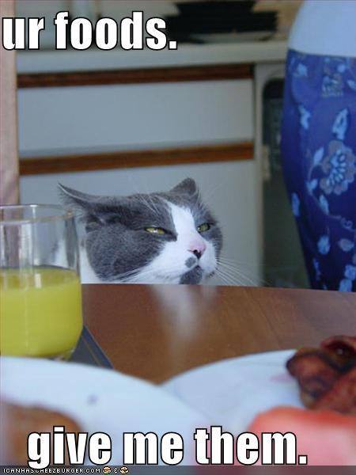

Sice je důležité vědět, jak o kočičí mazlíčky správně pečovat, ale neméně důležité je nechat se jimi pobavit. Tato neobyčejná a fascinující zvířáta bývají často významným zdrojem tzv. memů (vtipné obrázky či krátká videa, mnohdy s popiskem) na internetu. Na této stránce najdete pár nejlepších memů, které jsme vybíraly se slzami v očích. Pobavte se s námi!
